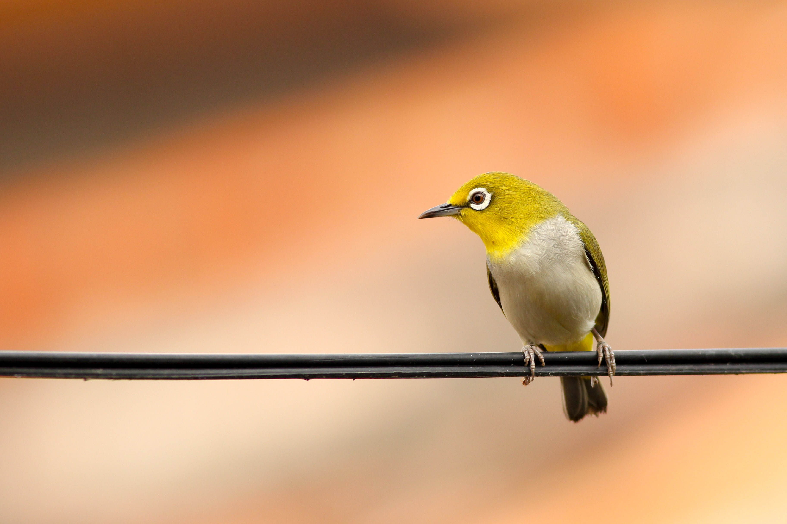
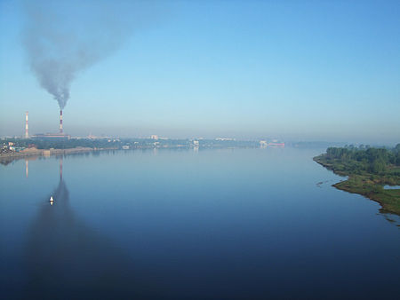
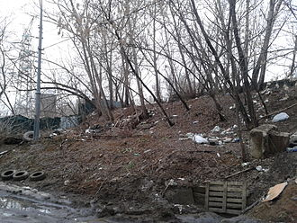
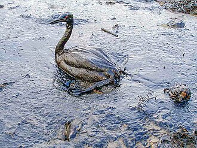

Интересные статьи, которые могут вам понравиться
Загрязнение воздуха
Загрязнение атмосферы Земли или загрязнение воздухапроисходит,
когда в атмосферу Земли попадают вредныеили избыточные количества
веществ, включая газы(такие как диоксид углерода, монооксид
углерода,диоксид серы, оксиды азота, метан и хлорфторуглероды),
частицы (как органические, так и неорганические) ибиологические
молекулы. Это может вызватьзаболевания, аллергию и даже смерть
людей.Также это может нанести вред другим живыморганизмам,
таким как животные и растения, можетнанести ущерб и естественной
или искусственнойэкосистеме (среде) Земли. Загрязнение воздухаможет
вызывать как человеческая деятельность,так и природные процессы.
Загрязнение воздуха внутри помещений и плохое качество воздуха в городах входят в...
Подробнее
Загрязнение почвы
Загрязнение почв — вид антропогенной деградации почв, при
которой содержание химических веществ в почвах, подверженных
антропогенному воздействию, превышает природный региональный
фоновый уровень их содержания в почвах.
Основной критерий загрязнения окружающей среды различными
веществами — проявление признаков вредного действия этих
веществ в окружающей среде на отдельные виды живых организмов,
так как устойчивость отдельных видов последних к химическому
воздействию существенно различается. Экологическую опасность
представляет то, что в окружающей человека природной среде по
сравнению с природными уровнями превышено содержание определенных
химических веществ за счет их поступления из антропогенных
источников. Эта опасность может реализоваться не только для
самых чувствительных видов живых организмов.
В современном сельском хозяйстве используются...
Подробнее
Загрязнение воды
Мировой океан занимает более 70 процентов территории Земли, при этом
40 процентов его акватории считаются «сильно пострадавшими» от
деятельности человека, в том числе от загрязнения, истощения рыбных
запасов и потери прибрежных мест обитания живых существ.
Птица, покрытая нефтью, после разлива нефти в Черном море
Сушу и океан связывают реки, впадающие в моря и несущие различные
загрязнители. Не распадающиеся при контакте с почвой химические
вещества, такие как нефтепродукты, нефть, удобрения (особенно нитраты
и фосфаты), инсектициды и гербициды попадают в реки, а затем — в океан.
Более 80% этих веществ попадает в океан с атмосферными осадками и путем
прямых сбросов, а еще 20% — с кораблей и нефтяных платформ. Согласно
исследованию ученых из Комиссии по загрязнению и здоровью научного
журнала Lancet, загрязнение мирового океана приводит к более чем
9 млн преждевременных смертей в год.
Морской мусор собирается в...